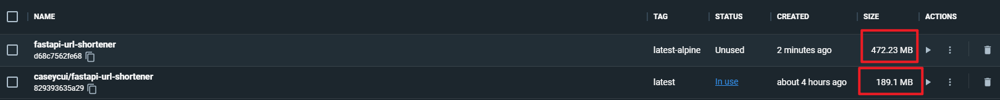

datetime:2023/04/08 17:16
author:nzb
制作 Python Docker 镜像的最佳实践
1、通用 Docker 容器镜像最佳实践
这里也再次罗列一下对 Python Docker 镜像也适用的一些通用最佳实践。
- 使用
LABEL maintainer - 标记重要端口
- 设置环境变量
- 使用非 root 用户运行容器进程
- 使用
.dockerignore排除无关文件
1.1、Python 镜像推荐设置的环境变量
Python 中推荐的常见环境变量如下：
# 设置环境变量
ENV PYTHONDONTWRITEBYTECODE 1
ENV PYTHONUNBUFFERED 1
ENV PYTHONDONTWRITEBYTECODE 1: 建议构建 Docker 镜像时一直为1, 防止 python 将 pyc 文件写入硬盘ENV PYTHONUNBUFFERED 1: 建议构建 Docker 镜像时一直为1, 防止 python 缓冲 (buffering) stdout 和 stderr, 以便更容易地进行容器日志记录- ❌不再建议使用
ENV DEBUG 0环境变量，没必要。
1.2、使用非 root 用户运行容器进程
出于安全考虑，推荐运行 Python 程序前，创建 非 root 用户并切换到该用户。
# 创建一个具有明确 UID 的非 root 用户，并增加访问 /app 文件夹的权限。
RUN adduser -u 5678 --disabled-password --gecos "" appuser && chown -R appuser /app
USER appuser
1.3、使用 .dockerignore 排除无关文件
需要排除的无关文件一般如下：
**/__pycache__
**/*venv
**/.classpath
**/.dockerignore
**/.env
**/.git
**/.gitignore
**/.project
**/.settings
**/.toolstarget
**/.vs
**/.vscode
**/*.*proj.user
**/*.dbmdl
**/*.jfm
**/bin
**/charts
**/docker-compose*
**/compose*
**/Dockerfile*
**/node_modules
**/npm-debug.log
**/obj
**/secrets.dev.yaml
**/values.dev.yaml
*.db
.python-version
LICENSE
README.md
这里选择几个说明下：
**/__pycache__: python 缓存目录**/*venv: Python 虚拟环境目录。很多 Python 开发习惯将虚拟环境目录创建在项目下，一般命名为：.venv或venv**/.env: Python 环境变量文件**/.git**/.gitignore: git 相关目录和文件**/.vscode: 编辑器、IDE 相关目录**/charts: Helm Chart 相关文件**/docker-compose*: docker compose 相关文件*.db: 如果使用 sqllite 的相关数据库文件.python-version: pyenv 的 .python-version 文件
2、不建议使用 Alpine 作为 Python 的基础镜像
为什么呢？大多数 Linux 发行版使用 GNU 版本（glibc）的标准 C 库，几乎每个 C 程序都需要这个库，包括 Python。但是 Alpine Linux 使用 musl, Alpine 禁用了 Linux wheel 支持。
理由如下：
- 缺少大量依赖
- CPython 语言运行时的相关依赖
- openssl 相关依赖
- libffi 相关依赖
- gcc 相关依赖
- 数据库驱动相关依赖
- pip 相关依赖
- 构建可能更耗时
- Alpine Linux 使用 musl，一些二进制 wheel 是针对 glibc 编译的，但是 Alpine 禁用了 Linux wheel 支持。现在大多数 Python 包都包括 PyPI 上的二进制 wheel，大大加快了安装时间。但是如果你使用 Alpine Linux，你可能需要编译你使用的每个 Python 包中的所有 C 代码。
- 基于 Alpine 构建的 Python 镜像反而可能更大
- 乍一听似乎违反常识，但是仔细一想，因为上面罗列的原因，确实会导致镜像更大的情况。
📚️Reference:
Using Alpine can make Python Docker builds 50× slower (pythonspeed.com)
这里以这个 Demo FastAPI Python 程序 为例，其基于 Alpine 的 Dockerfile 地址是这个：链接
因为缺少很多依赖，所以在用 pip 安装之前，就需要尽可能全地安装相关依赖：
RUN set -eux \
&& apk add --no-cache --virtual .build-deps build-base \
openssl-dev libffi-dev gcc musl-dev python3-dev \
&& pip install --upgrade pip setuptools wheel \
&& pip install --upgrade -r /app/requirements.txt \
&& rm -rf /root/.cache/pip
这里也展示一下基于 Alpine 构建完成后的 镜像未压缩大小：

基于 Alpine 的 Python Demo 镜像大小：472 MB; 相比之下，基于 slim 的只有 189 MB
在上面代码的这一步，就占用了太多空间：
🤔 思考 :
可能上面一段可以精简，但是要判断对于哪个 Python 项目，可以精简哪些包，实在是太难了。
+ apk add --no-cache --virtual .build-deps build-base openssl-dev libffi-dev gcc musl-dev python3-dev
fetch https://dl-cdn.alpinelinux.org/alpine/v3.17/main/x86_64/APKINDEX.tar.gz
fetch https://dl-cdn.alpinelinux.org/alpine/v3.17/community/x86_64/APKINDEX.tar.gz
(1/28) Installing libgcc (12.2.1_git20220924-r4)
(2/28) Installing libstdc++ (12.2.1_git20220924-r4)
(3/28) Installing binutils (2.39-r2)
(4/28) Installing libmagic (5.43-r0)
(5/28) Installing file (5.43-r0)
(6/28) Installing libgomp (12.2.1_git20220924-r4)
(7/28) Installing libatomic (12.2.1_git20220924-r4)
(8/28) Installing gmp (6.2.1-r2)
(9/28) Installing isl25 (0.25-r0)
(10/28) Installing mpfr4 (4.1.0-r0)
(11/28) Installing mpc1 (1.2.1-r1)
(12/28) Installing gcc (12.2.1_git20220924-r4)
(13/28) Installing libstdc++-dev (12.2.1_git20220924-r4)
(14/28) Installing musl-dev (1.2.3-r4)
(15/28) Installing libc-dev (0.7.2-r3)
(16/28) Installing g++ (12.2.1_git20220924-r4)
(17/28) Installing make (4.3-r1)
(18/28) Installing fortify-headers (1.1-r1)
(19/28) Installing patch (2.7.6-r8)
(20/28) Installing build-base (0.5-r3)
(21/28) Installing pkgconf (1.9.3-r0)
(22/28) Installing openssl-dev (3.0.7-r0)
(23/28) Installing linux-headers (5.19.5-r0)
(24/28) Installing libffi-dev (3.4.4-r0)
(25/28) Installing mpdecimal (2.5.1-r1)
(26/28) Installing python3 (3.10.9-r1)
(27/28) Installing python3-dev (3.10.9-r1)
(28/28) Installing .build-deps (20221214.074929)
Executing busybox-1.35.0-r29.trigger
OK: 358 MiB in 65 packages
...
3、建议使用官方的 python slim 镜像作为基础镜像
继续上面，所以我是建议：使用官方的 python slim 镜像作为基础镜像
镜像库是这个：https://hub.docker.com/_/python
并且使用 python:<version>-slim 作为基础镜像，能用 python:<version>-slim-bullseye 作为基础镜像更好（因为更新，相对就更安全一些）.
这个镜像不包含默认标签中的常用包，只包含运行 python 所需的最小包。这个镜像是基于 Debian 的。
使用官方 python slim 的理由还包括：
- 稳定性
- 安全升级更及时
- 依赖更新更及时
- 依赖更全
- Python 版本升级更及时
- 镜像更小
📚️Reference:
The best Docker base image for your Python application (Sep 2022) (pythonspeed.com)
4、一般情况下，Python 镜像构建不需要使用 "多阶段构建"
一般情况下，Python 镜像构建不需要使用 "多阶段构建".
理由如下：
- Python 没有像 Golang 一样，可以把所有依赖打成一个单一的二进制包
- Python 也没有像 Java 一样，可以在 JDK 上构建，在 JRE 上运行
- Python 复杂而散落的依赖关系，在 "多阶段构建" 时会增加复杂度
- …
如果有一些特殊情况，可以尝试使用 "多阶段构建" 压缩镜像体积：
- 构建阶段需要安装编译器
- Python 项目复杂，用到了其他语言代码（如 C/C++/Rust)
5、pip 小技巧
使用 pip 安装依赖时，可以添加 --no-cache-dir 减少镜像体积：
# 安装 pip 依赖
COPY requirements.txt .
RUN python -m pip install --no-cache-dir --upgrade -r requirements.txt
6、Python Dockerfile 最佳实践样例
FROM python:3.10-slim
LABEL maintainer="cuikaidong@foxmail.com"
EXPOSE 8000
# Keeps Python from generating .pyc files in the container
ENV PYTHONDONTWRITEBYTECODE=1
# Turns off buffering for easier container logging
ENV PYTHONUNBUFFERED=1
# Install pip requirements
COPY requirements.txt .
RUN python -m pip install --no-cache-dir --upgrade -r requirements.txt
WORKDIR /app
COPY . /app
# Creates a non-root user with an explicit UID and adds permission to access the /app folder
RUN adduser -u 5678 --disabled-password --gecos "" appuser && chown -R appuser /app
USER appuser
CMD ["uvicorn", "shortener_app.main:app", "--host", "0.0.0.0"]
7、总结
制作 Python Docker 容器镜像的最佳实践。最佳实践的目的一方面是为了减小镜像体积，提升 DevOps 效率，另一方面是为了提高安全性.
最佳实践如下:
- 推荐 2 个 Python 的环境变量
ENV PYTHONDONTWRITEBYTECODE 1ENV PYTHONUNBUFFERED 1
- 使用非 root 用户运行容器进程
- 使用
.dockerignore排除无关文件 - 不建议使用 Alpine 作为 Python 的基础镜像
- 建议使用官方的 python slim 镜像作为基础镜像
- 一般情况下, Python 镜像构建不需要使用 "多阶段构建"
- pip 小技巧:
--no-cache-dir